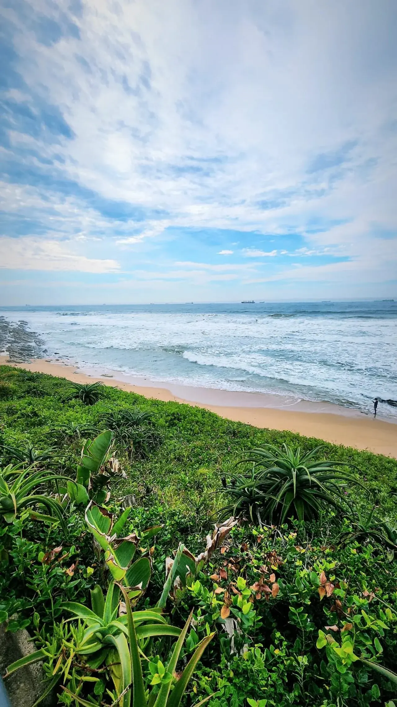

Umhlanga Rocks
KwaZulu-Natal, Afrique du Sud · surf

Au nord de Durban, Umhlanga mêle plage, promenade et surf sur la côte du KwaZulu-Natal. Une étape pour explorer la région depuis le bord de mer.
- Lieu
- KwaZulu-Natal, Afrique du Sud
- Niveau
- Variable selon les conditions
- Activités
- surf
- Type d'eau
- Mer / océan
- Coordonnées
- -29.73, 31.09 (position approximative du secteur)
Ouvrir dans Ocean Buddy Télécharger sur l'App Store
Source : South African Tourism.